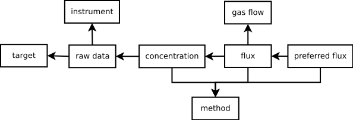

Datamodel for spectroscopy¶
The datamodel is intended to store raw spectroscopy data, analysis results, and the corresponding processing flows. The general idea is that a file contains all the information required to reproduce the final flux measurements. This implementation of the datamodel is based on HDF5 but other implementations may, for example, use the datamodel as a database or XML scheme.
Example¶
The following shows an example on how the Dataset type, which implements
the datamodel, can be used to get a quick overview of the data contained in a
FlySpec file:
from spectroscopy.dataset import Dataset
import tempfile
d = Dataset(tempfile.mktemp(), 'w')
d.read('testfile', ftype='FLYSPEC')
d.plot()

Simplified datamodel¶
Classes & Functions¶
-
class
spectroscopy.dataset.Dataset(filename, mode)[source]¶ This class is a container for all data describing a spectroscopy analysis from the raw measurements, over instruments and information on gas plumes to the final gas flux results.
Parameters: - preferredFluxIDs (list) – IDs of the best/final flux estimate. As a dataset can contain analyses from different targets, there can be more than one preferred flux estimate.
- spectra (list) – List of all spectra that are part of the dataset.
- instruments (list) – List of all instruments that are part of the dataset.
- retrievals (list) – List of all retrievals that are part of the dataset.
- plumevelocities (list) – List of all plume velocities that are part of the dataset.
- targets (list) – List of all target plumes that are part of the dataset.
- flux (list) – List of all flux estimates that are part of the dataset.
-
new(data_buffer, pedantic=False)[source]¶ Create a new entry in the HDF5 file from the given data buffer.
Register one or more tag names.
Remove one or more tag names. This will also remove the tag from every element that had been tagged.
-
plot(toplot='concentrations', savefig=None, **kargs)[source]¶ Provide overview plots for data contained in a dataset.
Parameters: toplot (str) – Choose the datatype to plot. Parameters specific to retrievals contour plots:
Parameters: - log (bool) – Turn on logarithmic colour scales.
- cmap_name (str) – The name of the matplotlib colour scale to use.
- angle_bins (
numpy.ndarray) – Define the bins onto which the angles of the retrievals are discretized to. - ncontours (int) – Number of contours used in the contour plot.
-
class
spectroscopy.datamodel.InstrumentBuffer(**kwargs)[source]¶ Description of the spectrometer.
Parameters: - tags (set) – List of human readable tags
- sensor_id (str) – Serial number
- location (str) – Name of sensor location
- no_bits (int) – The number of bits used by the analog-to-digital converter.
- type (str) – The spectrometer type (e.g. DOAS, FlySpec, etc.).
- description (str) – Any additional information on the instrument that may be relevant.
-
class
spectroscopy.datamodel.TargetBuffer(**kwargs)[source]¶ Description of the plume location.
Parameters: - tags (set) – List of human readable tags
- target_id (str) – A unique, human readable ID
- name (str) – Descriptive name
- position (
numpy.ndarray) – Position of a plume in decimal degrees for longitude and latitude and m above sea level for elevation (lon, lat, elev). - position_error (
numpy.ndarray) – Errors [degrees,degrees, m] - description (str) – Any additional information on the plume that may be relevant.
-
class
spectroscopy.datamodel.DataQualityTypeBuffer(**kwargs)[source]¶ A data quality description.
Parameters:
-
class
spectroscopy.datamodel.RawDataBuffer(**kwargs)[source]¶ Raw data is data that requires further processing to become meaningful for gaschemistry analysis. It can be, for example, spectra recorded by a spectrometer or unscaled concentration measured by a laser diode. If an instrument provides pre-processed data, this element may only hold meta information about the raw data but not the raw data itself (e.g. electro-chemical sensors).
Parameters: - tags (set) – List of human readable tags
- instrument (reference to Instrument) – Reference to the instrument recording the data.
- target (reference to Target) – Reference to the target plume.
- type (reference to RawDataType) – Reference to the raw-data-type.
- inc_angle (float) – Inclinitation of measurement direction from vertical. For a transect all angles would typically be the same, e.g. 0.0 if the spectrometer was pointing up.
- inc_angle_error (float) – Uncertainty of inclination angle in degrees.
- bearing (float) – Bearing of the scan plane in degrees from grid north.
- bearing_error (float) – Scan bearing uncertainty.
- position (float) – The position of the spectrometer in decimal longitude, latitude, and elevation in m above sea level (lon, lat, elev).
- position_error (float) – Instrument location uncertainty.
- path_length (float) – Path length of a scan [m].
- path_length_error (float) – Path length uncertainty.
- d_var (
numpy.ndarray) – Dependent variable e.g. measured spectra, concentration - ind_var (
numpy.ndarray) – Independent variable e.g. wavelengths, time - datetime (datetime) – Date Time of recording in ISO 8601 format.
- data_quality (
numpy.ndarray) – Data quality parameters. - data_quality_type (
numpy.ndarray) – List of references to data-quality-type. - integration_time (float) – Exposure time [s].
- no_averages (float) – Number/time measurements are averaged over.
- temperature (float) – Temperature at the site or in the instrument [degC].
- user_notes (str) – Any additional information relevant to the measurements.
-
class
spectroscopy.datamodel.MethodBuffer(**kwargs)[source]¶ Desription of analysis methods.
Parameters: - tags (set) – List of human readable tags
- name (str) – Name of software/method
- description (str) – Short method summary
- settings (json) – Settings/setup relevant to reproduce results in JSON format.
- reference (str) – URI to more detailed method description.
- raw_data (str) – Reference to raw data used in this method
-
class
spectroscopy.datamodel.GasFlowBuffer(**kwargs)[source]¶ Can either contain estimates of plume velocity or wind speed. Plume velocity estimates can either come from direct measurements (e.g. image processing) or meteorological observations (e.g. wind speed). Wind speed estimates can be either from direct measurements (e.g. weather stations) or meteorological models. Both, plume velocity and wind speed can be either described on a regular 4D local cartesian grid or at a single point. Grids are assumed to be right-handed Cartesian coordinate systems with uniform grid point spacing along any direction.
Parameters: - tags (set) – List of human readable tags
- methods (
numpy.ndarray) – List of references to methods used to compute gas flow - vx (float) – x component of gas flow vector (wrt local grid or east)
- vx_error (float) – x component error
- vy (float) – y component of gas flow vector (wrt local grid or east)
- vy_error (float) – y component error
- vz (float) – z component of gas flow vector (wrt local grid or east)
- vz_error (float) – z component error
- unit (str) – Physical unit of gas flow vector
- position (float) – Measurement location or grid origin in decimal degrees for longitude and latitude and m above sea level for elevation (lon, lat, elev).
- position_error (float) – Location uncertainty
- grid_bearing (float) – X-axis angle from grid north in decimal degrees.
- grid_increments (float) – Grid increments along the x-, y-, and z-axis
- pressure (float) – Atmospheric pressure [Pa]
- temperature (float) – Temperature [degC]
- datetime (datetime) – Date Time [UTC] in ISO 8601 format
- user_notes (str) – Any additional information that may be relevant.
-
class
spectroscopy.datamodel.ConcentrationBuffer(**kwargs)[source]¶ Describes different types of gas concentration such as path concentration as inferred from spectrometers or volumetric concentration as measured by electro-chemical sensors.
Parameters: - tags (set) – List of human readable tags
- method (reference to Method) – Reference to the method used to obtain concentration estimates.
- gasflow (reference to GasFlow) – Reference to gas flow model (if applicable).
- rawdata (reference to RawData) – Reference to raw measurements (if applicable).
- rawdata_indices (
numpy.ndarray) – Range of raw data used to estimate concentration - gas_species (str) – Gas type (e.g. SO2)
- value (
numpy.ndarray) – Concentration estimate. - value_error (
numpy.ndarray) – Concentration uncertainty. - unit (str) – Unit of gas concentration.
- analyst_contact (str) – Contact (e.g. email) of person running software
- user_notes (str) – Any additional information that may be relevant.
-
class
spectroscopy.datamodel.FluxBuffer(**kwargs)[source]¶ Flux estimates based on concentration estimates and a gas flow model.
Parameters: - tags (set) – List of human readable tags
- method (reference to Method) – Reference to software used
- concentration (reference to Concentration) –
- concentration_indices (
numpy.ndarray) – Indices of concentrations - gasflow (reference to GasFlow) –
- value (
numpy.ndarray) – Flux estimates - value_error (
numpy.ndarray) – Flux estimate errors - unit (str) – Physical unit of flux.
- analyst_contact (str) – Contact (e.g. email) of person running software
- user_notes (str) – Any additional information that may be relevant.
-
class
spectroscopy.datamodel.PreferredFluxBuffer(**kwargs)[source]¶ Derived flux values either by selecting a subset or by integrating/averaging. These values would overlap with what is currently stored in FITS.
Parameters: - tags (set) – List of human readable tags
- flux_ids (
numpy.ndarray) – References to flux estimates used to compute derived flux - flux_indices (
numpy.ndarray) – Indices of flux values used to compute derived flux - date (
numpy.ndarray) – Dates of derived flux values in ISO 8601 format. - value (float) – Derived flux value
- value_error (float) – Flux value error
- method_id (reference to Method) – Reference to method
- user_notes (str) – Comments relevant for reproducing preferred fluxes